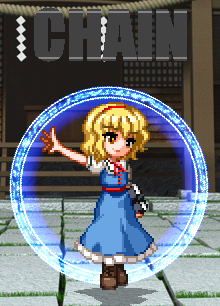

Sistema Básico
Entrada de Comandos
Colocación de Botones
Los botones utilizados para la operación son los 7 botones básicos de A,B,C,Z,X,Y & Start se utilizan como auxiliares.| Botón | Uso Previsto |
|---|---|
| A | Golpe Leve o Largo (Depende del personaje) |
| B | Golpe Fuerte |
| C | Disparo C: Dispara o tiene otros usos. |
| X | Disparo A |
| Y | Disparo B |
| Z | Usa la carta disponible. |
| D | Cambia de personaje dentro del combate dentro del Tag Team. |
| W | Cambia de personaje dentro del combate dentro del Tag Team. |
| Start | Cambia la posición de la carta. |
Acción Básica
Acción de Espera
Quieto
 Capaz de hacer casi cualquier cosa.
Capaz de hacer casi cualquier cosa.Esto es lo que sucede cuando no ingresas nada.
Agachado
 Capaz de hacer casi cualquier cosa.
Capaz de hacer casi cualquier cosa.Esto es lo que sucede cuando le das a 2.
Movimiento
Caminando
 Se mueve en izquierda y derecha con 4 o 6.
Se mueve en izquierda y derecha con 4 o 6.
Dash
 Si haces Dash con 66/6+Z tendras graze e iras para adelante.
Si haces Dash con 66/6+Z tendras graze e iras para adelante.Sirve para esquivar proyectiles.
Si haces Dash con 44/4+Z tendras graze e iras para atras.
Salto
 Simplemente salta y se mueve por el aire.
Simplemente salta y se mueve por el aire.Y se realiza simplemente con 7/8 y 9.
Super Salto
 Salta y añade graze al personaje.
Salta y añade graze al personaje.Por lo tanto esquivas proyectiles con este movimiento que se ejecuta con 8+Z.
Acción de Recuperación
Recuperación
 Este se recupera presionando A,B,C,X,Y o Z
Este se recupera presionando A,B,C,X,Y o Z
Levantarse
 Se levanta automáticamente cuando está tirado en el suelo, de hecho puedes dirigirte a cualquier lado si mantienes la dirección.
Se levanta automáticamente cuando está tirado en el suelo, de hecho puedes dirigirte a cualquier lado si mantienes la dirección.
Sistema
Sistema de Movimientos y Cartas
Barra de Danmaku y Calibre de Daño
 La parte de arriba sirve para ver cuanto es el daño limite de los personajes.
La parte de arriba sirve para ver cuanto es el daño limite de los personajes.Y la parte de abajo sirve para ver si tienes suficiente poder para lanzar tus ataques.
En cuanto a las estrellas, sirven para las bombas inicialmente siempre tienes 2.
Cartas
 Hay cartas para activar y ejecutar System Card,Skill Card,Spell Card y Assistant Card, depende de tú deck.
Hay cartas para activar y ejecutar System Card,Skill Card,Spell Card y Assistant Card, depende de tú deck.
Declarar una Carta
 Cuando declaras una carta, la carta se mantiene y la podras activar cuando quieras con "236Z".
Cuando declaras una carta, la carta se mantiene y la podras activar cuando quieras con "236Z".| P. ¿Y como declaro una Carta? | |
|---|---|

|
Pues se ejecuta con 22Z. Y si no sabes que significa el 22Z puedes resolverlo aquí. |
Bomba
 Sirve para alejar a los enemigos nada más no hace daño.
Sirve para alejar a los enemigos nada más no hace daño.| P. ¿Y como hago una Bomba? | |
|---|---|

|
Pues se ejecuta con 22C y tienes de límite 2 bombas. Y si no sabes que significa el 22C puedes resolverlo aquí. |
Ataque en Cadena
 Sirve para hacer una spell card más poderosa qué la anterior.| P. ¿Y como hago un Ataque en Cadena? | |
|---|---|
|
|
Pues se ejecuta con una Spell Card normal teniéndolo juntas. Y tienes que presionar C rápidamente o ser preciso. (Este ataque en cadena solo funciona con ciertas cartas y personajes.) |